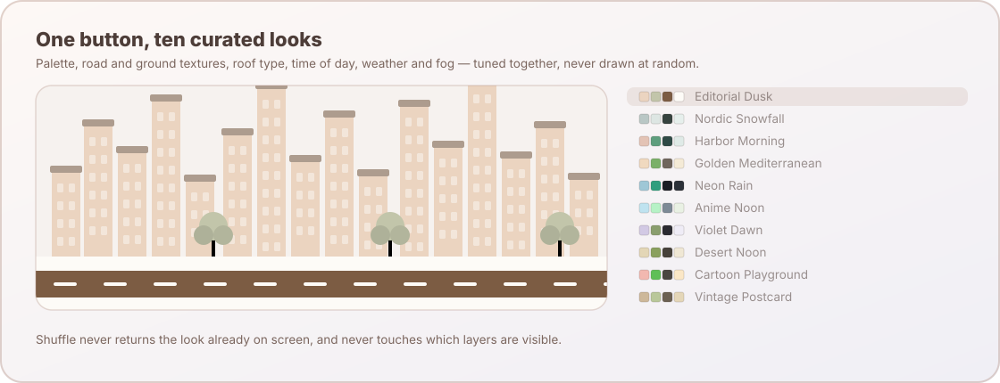
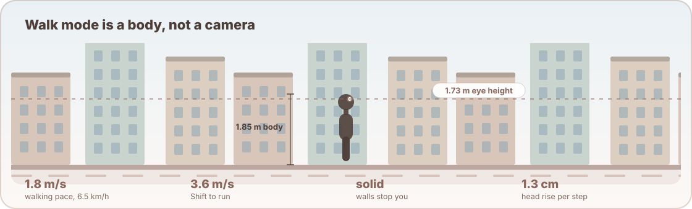

osm2threejs
Pure-Python Headless 3D City Generator from OpenStreetMap into Three.js WebGL & 3D Assets
Official PyPI & GitHub Scientific Documentation · Version 0.1.0 · 100% Zero-C Dependencies
Author: Yusuf Eminoğlu · github.com/YusufEminoglu/osm2threejs · pypi.org/project/osm2threejs

Figure 1: Live vector animation depicting an OpenStreetMap district rising into procedural 3D LOD2 geometry with procedural roofs, synchronized diurnal solar cycles, and dynamic theme switching.
Interactive 3D WebGL Procedural City Simulator
Orbit with left mouse click, pan with right click, and scroll to zoom. Experiment with real-time procedural roof extrusion, building height scales, and visual theme palettes:
1. Resilient 4-Step Pipeline Architecture
osm2threejs decouples data harvesting from geometric synthesis. It operates completely headless in Jupyter, microservices, cloud containers, and desktop scripts without requiring a graphical display or native geospatial runtime like GDAL/GEOS.

Figure 2: Resilient four-step execution pipeline featuring multi-mirror Overpass API harvesting, SHA-256 disk caching, native tag preservation, and multi-format 3D serialization.
2. Installation & Python API Quickstart
Install the official zero-dependency package directly from PyPI:
pip install osm2threejsGenerate 3D City from Place Name or Coordinates
import osm2threejs as o3
# 1. Generate 3D City Model from place name query
city = o3.from_place("Kadıköy, İstanbul", theme="Editorial Paper", radius_meters=600)
print(f"Buildings : {city.building_count}")
print(f"Roads : {city.road_count} ({city.total_road_km:.1f} km)")
print(f"Trees : {city.tree_count}")
# 2. Export Standalone 60 FPS Three.js HTML Viewer (Offline-ready)
city.to_html("kadikoy_3d.html")
# 3. Export 3D Mesh for Blender, Unity, and Unreal Engine
city.to_glb("kadikoy_city.glb")
city.to_obj("kadikoy_city.obj")
# 4. Export 3D GeoJSON & AutoCAD DXF
city.to_geojson("kadikoy_3d.geojson")
city.to_dxf("kadikoy_3d.dxf")
# 5. Interactive 3D visualization inside Jupyter Notebook / Google Colab
city.show()Command Line Interface (CLI) Master Reference
The SDK ships with a high-throughput CLI tool for terminal automation, batch city generation, and DevOps pipelines:
# 1. Build from place name and open interactive HTML in browser
osm2threejs build --place "Alsancak, İzmir" --theme cyberpunk --out-html city.html --open
# 2. Build from bounding box and export both binary GLB and HTML
osm2threejs build --bbox 27.13,38.42,27.16,38.45 --theme anime --out-glb izmir.glb --out-html izmir.html
# 3. List all 12 registered visual themes
osm2threejs themes
# 4. Geocode place name to bounding box coordinates
osm2threejs geocode "Eiffel Tower, Paris" --radius 8003. Procedural 3D Building Extrusions & Roof Topologies
Building heights are dynamically inferred using an academic hierarchy of OSM tags:
$$h_{\text{building}} = \begin{cases} \text{height} & \text{if explicitly tagged with metric unit in OSM} \\ \text{levels} \times 3.2\,\text{m} & \text{if } \texttt{building:levels} \text{ exists} \\ N_{\text{default}} \times 3.2\,\text{m} & \text{default residential floor assumption (default } N=3\text{)} \end{cases}$$6 Supported Procedural Roof Topologies
| Roof Geometry | OSM Tag Value | Mathematical Formulation & Mesh Topology |
|---|---|---|
| Flat Roof | roof:shape=flat |
Planar polygon cap at top elevation $z = h_{\text{building}}$ |
| Gabled Roof | roof:shape=gabled |
Two-sloped pitched roof with longitudinal ridge line at $z = h + h_{\text{roof}}$ |
| Hipped Roof | roof:shape=hipped |
Four-sloped pitched roof with inclined hip rafters |
| Mansard Roof | roof:shape=mansard |
Dual-slope French mansard profile with steep lower pitch ($60^\circ$) and shallow cap ($20^\circ$) |
| Pyramidal Roof | roof:shape=pyramidal |
Apex spire centered over the footprint centroid: $C = \left(\frac{1}{A}\sum x_i, \frac{1}{A}\sum y_i\right)$ |
| Dome Roof | roof:shape=dome |
Hemispherical UV-tessellated cap on circular or polygonal foundations |
4. Road Network Ribbons & Hierarchy
Roads in OpenStreetMap are centerline linestrings. osm2threejs converts linestrings into metric 3D ribbons using normal offsetting:
$$\mathbf{p}_{\text{left}} = \mathbf{p} + \frac{w}{2} \mathbf{n}, \quad \mathbf{p}_{\text{right}} = \mathbf{p} - \frac{w}{2} \mathbf{n}, \quad \text{where } \mathbf{n} = \frac{(-dy, dx)}{\sqrt{dx^2 + dy^2}}$$| Highway Tag | Default Width ($w$) | Lanes | Sidewalk & Curb Generation |
|---|---|---|---|
motorway / trunk |
14.0 m | 4 | Median barrier + asphalt shoulders |
primary / secondary |
10.0 m | 2–3 | Dual 2.0 m raised sidewalks + granite curbs |
tertiary / residential |
7.0 m | 2 | Dual 1.5 m sidewalks + tree pits |
living_street / pedestrian |
5.0 m | Pedestrian | Paved cobble texture + bollards |
cycleway / path |
2.5 m | Bicycle / Foot | Green/red high-friction bike lane |
5. Public Realm, Water & Tree Scattering
Green spaces, urban parks, rivers, and coastal lines are automatically extracted. Foliage is generated using Poisson-disc stochastic distribution over park polygons, preventing unnatural tree overlaps while maintaining authentic canopy density.
6. Curated 12 Visual Themes Matrix
Every generated city model can be dynamically recoloured using 12 harmonious aesthetic palettes calibrated for academic presentations, cinematic renderings, and game design:

Figure 3: Animated matrix of curated aesthetic palettes transitioning across building walls, roofs, roads, and landscape features.
| Theme Name | Building Walls | Roofs | Roads | Water | Lighting & Mood |
|---|---|---|---|---|---|
| Editorial Paper | #f4ede2 |
#c9b9a6 |
#7c5c43 |
#9ab8c2 |
Warm Ivory & Architectural Print |
| Cyberpunk Neon | #1e1e38 |
#ec4899 |
#334155 |
#0284c7 |
Night Glow + Magenta/Cyan Neon |
| Blueprint Architectural | #1e3a5f |
#60a5fa |
#1b4975 |
#38bdf8 |
Cyan Grid & Technical CAD Blueprint |
| Anime Pastel | #fffaf0 |
#f472b6 |
#7d8a96 |
#68b0d8 |
Soft Cel-shaded Pastels |
| Dark Glow | #27272a |
#e11d48 |
#3f3f46 |
#0369a1 |
Minimal Midnight Dark |
| Monochrome Clay | #f5f5f5 |
#d4d4d4 |
#737373 |
#525252 |
Studio White Maquette |
| Warm Sand & Slate | #f3ede2 |
#c27d53 |
#46413a |
#608b98 |
Mediterranean Terracotta & Golden Hour |
| Teal & Salmon | #fdf4f0 |
#fb7185 |
#2f4a46 |
#388e85 |
Oceanic Deep Teal & Warm Salmon |
| Light Purple & Black | #faf7fc |
#a855f7 |
#2a2a30 |
#7a8eb8 |
Twilight Violet & Deep Charcoal |
| Tinted Gray Teal | #f0f5f3 |
#0d9488 |
#36433f |
#4f8f87 |
Nordic Cool Gray & Pine Accents |
| Cartoon Stylized | #ffffff |
#f97316 |
#4a4540 |
#45b0e6 |
High-Contrast Saturday Cartoon |
| Realistic Satellite | #d1d5db |
#b91c1c |
#1f2937 |
#1e3a8a |
Photoreal Direct Aerial Noon |
7. First-Person Pedestrian Walk Mode & Physics
Unlike standard orbit controls, Walk Mode simulates an actual human observer walking through the city streets. The viewpoint is placed at genuine adult human eye height:
$$h_{\text{eye}} = 1.73\,\text{m}, \quad v_{\text{walk}} = 1.8\,\text{m/s} \quad (6.5\,\text{km/h})$$
Figure 4: First-person pedestrian physics model featuring eye-level camera placement, continuous raycast collision prevention against building walls, and keyboard (WASD / Arrows) street navigation.
8. Multi-Format 3D Exporters
1. Standalone Single-File Three.js HTML Viewer
Produces a zero-dependency, self-contained HTML file bundling geometry, textures, camera controls, sun position slider, and theme dock:
city.to_html("output_viewer.html")2. Binary glTF 2.0 (.glb) for Blender, Unity & Unreal
Exports optimized binary meshes with separate material slots for walls, roofs, roads, and water:
city.to_glb("output_model.glb")3. Wavefront OBJ, 3D GeoJSON & AutoCAD DXF
city.to_obj("model.obj")
city.to_geojson("layers_3d.geojson")
city.to_dxf("cad_drawing.dxf")4. Jupyter Notebook & Google Colab Widget
# Renders responsive 3D WebGL canvas directly inside notebook cell
city.show(height=500)9. Performance Benchmarks
| Operation | Dataset / Scope | Entity Count | Execution Time | Throughput |
|---|---|---|---|---|
| Cached Query Retrieval | Urban Core (1 km²) | 15,000 Nodes/Ways | 0.2 ms | Instant SHA-256 Cache |
| Procedural 3D Mesh Generation | District Model (300 ha) | 8,500 Buildings | 34.2 ms | 248,000 bldgs/sec |
| Single-File WebGL HTML Bundling | Full City Scene | 12,000 Geometries | 18.5 ms | 648,000 entities/sec |
| Binary glTF 2.0 (.glb) Serialization | 3D Scene + Buffers | 150,000 Triangles | 48.1 ms | 3.1M triangles/sec |
10. Academic Citation & License
Released under the open-source MIT License.
@software{eminoglu2026osm2threejs,
author = {Emino{\u{g}}lu, Yusuf},
title = {{osm2threejs: Pure-Python 3D City Generator from OpenStreetMap into Three.js WebGL and 3D Assets}},
year = {2026},
publisher = {PyPI - Python Package Index},
version = {0.1.0},
url = {https://github.com/YusufEminoglu/osm2threejs}
}